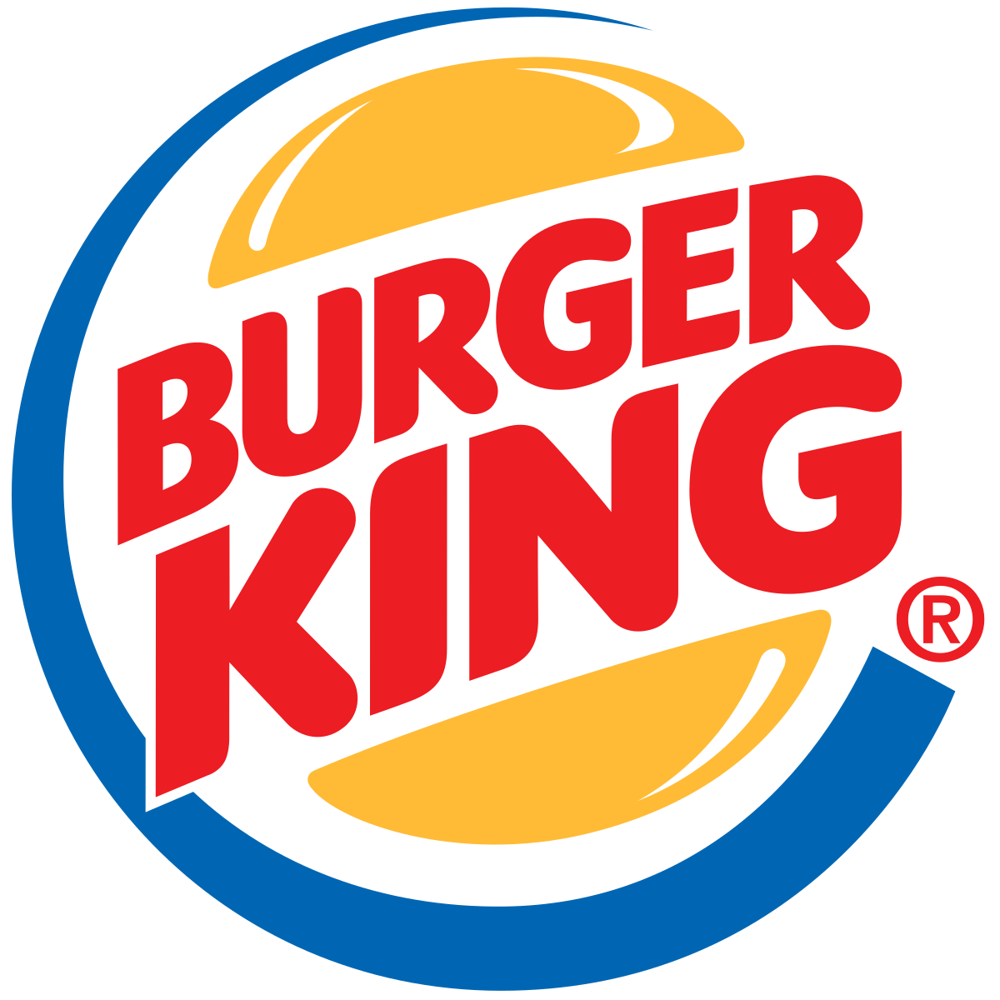

Burger King
Burger King, muitas vezes abreviado como BK, é uma rede de restaurantes especializada em fast-food, fundada nos Estados Unidos por James McLamore e David Edgerton, que abriram a primeira unidade em Miami, Flórida.

Burger King